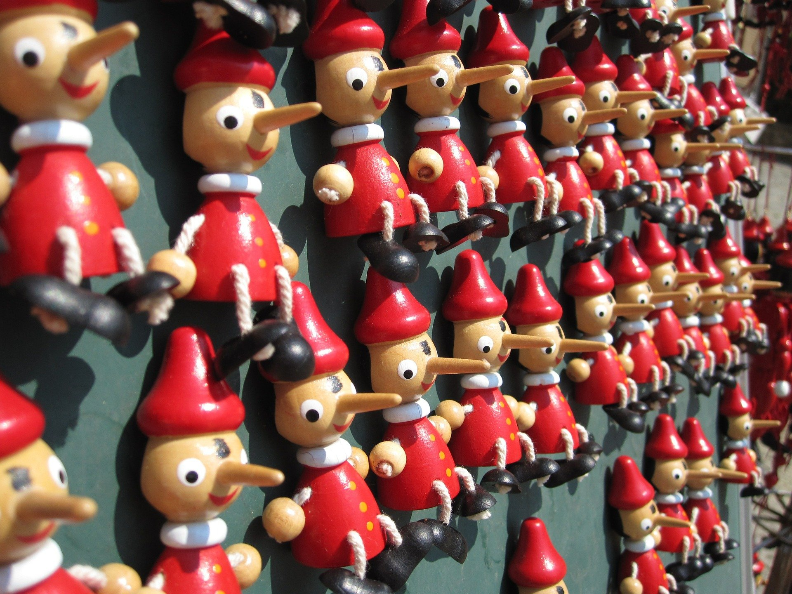
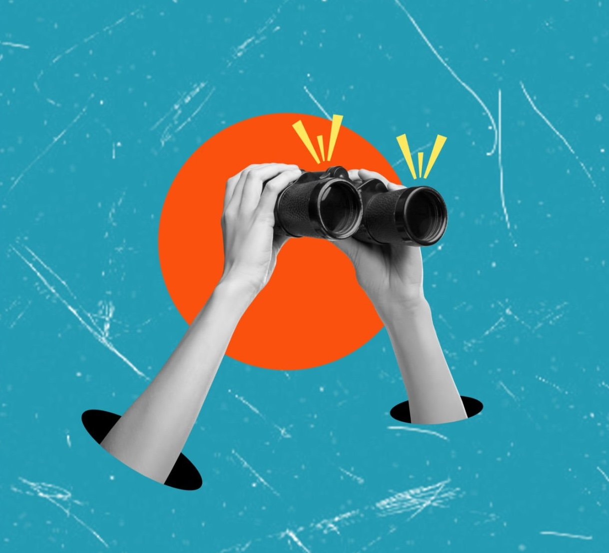

Research
Peer Reviewed Research
Digital Technologies & Public Opinion
Wack, M. and Parry, D.A.
(2025).
Synthetic Diversity: Examining the Effects of Ethnic Targeting Using AI-Generated Political Ads.
International Journal of Communication, 19, 3736--3760.
Read →
Saucier, C. J. and Wack, M. and Linvill, D. and Okoronkwo, A. and Tatineni, G. and Sezgin, A.
(2025).
Content Camouflage: How Diversified Posting Patterns Influence Human Detection of AI-Enabled Social Bots.
Computers in Human Behavior, 108881.
Read →
Wack, M. and Linvill, D. and Ehertt, C. and Warren, P.
(2025).
Evidence of AI Interference from a State-Backed Disinformation Campaign.
PNAS Nexus, 4(4).
Read →
Ziegler, M. and Wack, M. and Ingutia, N. and Muiruri, I. and Njogu, N. and Muriithi, K. and Njoroge, W. and Long, J. and Heimerl, K.
(2020).
Can Phones Build Relationships? A Case Study of a Kenyan Wildlife Conservancy's Community Development.
Proceedings of the 3rd ACM SIGCAS Conference on Computing and Sustainable Societies, 219--230.
ACM Best Paper Award
Read →

Information Environments
Wack, M.* and Schafer, J.S.* and Kennedy, I. and Beers, A. and Spiro, E. S. and Starbird, K.
(2025).
Legislating Uncertainty: Election Policies and the Amplification of Misinformation.
Policy Studies Journal.
*Equal Contributors
Read →
Schafer, J.S. and Duskin, K. and Prochaska, S. and Wack, M. and Beers, A. and Bozarth, L. and Agajanian, T. and Caulfield, M. and Spiro, E.S. and Starbird, K.
(2025).
ElectionRumors2022: A Dataset of Election Rumors on Twitter During the 2022 US Midterms.
Journal of Quantitative Description: Digital Media, 5.
Read →
Kennedy, I.* and Wack, M.* and Schafer, J.S. and Beers, A. and Spiro, E. and Starbird, K.
(2022).
Repeat Spreaders and Election Delegitimization: A Comprehensive Dataset of Misinformation Tweets from the 2020 U.S. Election.
Journal of Quantitative Description: Digital Media, 2.
*Equal Contributors
Read →
Himanshu, Z.* and Wack, M.* and Zhang, Y. and Schafer, J.S. and Beers, A. and Starbird, K. and Calo, R. and West, J.
(2022).
Auditing Google's Search Headlines as a Potential Gateway to Misleading Content: Evidence from the 2020 U.S. Election.
Journal of Online Trust and Safety, 1(4).
*Equal Contributors
Read →

Interventions
Wack, M. and Jalbert, M.
(2024).
Social Truth Queries as a Novel Method for Combating Misinformation: Evidence from Kenya.
International Journal of Press/Politics, 1--25.
Read →
Jalbert, M. and Wack, M. and Arya, P. and Williams, L.
(2023).
Social Truth Queries: Development of a New User-Driven Intervention for Countering Online Misinformation.
Journal of Applied Research in Memory and Cognition.
Read →
Bak-Coleman, J. and Kennedy, I. and Wack, M. and Beers, A. and Schafer, J.S. and Spiro, E. and Starbird, K. and West, J.
(2022).
Combining Interventions to Reduce the Spread of Viral Misinformation.
Nature Human Behavior, 1--9.
Read →
Sport & Politics
Wack, M. and Magistro, B. and Aslett, K.
(2025).
Silence in the Stands: Assessing the Impact of Russian “Sportswashing” on Online Fan Behavior Following the Full-Scale Invasion of Ukraine.
Social Science Quarterly.
Read →
Parsons, S. and Kennedy, I. and Bentley, Q. and Wack, M..
(2025).
Colorblind Racism & Intersectionality in Sports Discourse on Social Media.
Sociology of Race & Ethnicity.
Read →
Magistro, B. and Wack, M..
(2023).
Racial Bias in Fans and Officials: Evidence from the Italian Serie A.
Sociology, 57(6), 1302--1321.
Read →
Book Chapters
Wack, M. and Kharazian, Z.
(Forthcoming).
Existential Threat or Moral Panic? Synthesizing Debates About Disinformation's Impact.
In The Handbook of Disinformation and the Media.
Wack, M. and Mudavadi, K. and Jalbert, M.
(2025).
Election Observer Statements and Domestic Perceptions of Election Integrity.
In Election Observation at a Crossroads.
Ed. Moloney, Thomas.
Bloomsbury Press.